随着航空工业、汽车工业和轻工消费品生产的高速增长，复杂形状的零件越来越多，精度要求也越来越高。数控技术是现代机械加工的重要基础与技术。数控加工的应用可提高生产率、稳定加工质量、缩短加工周期、增加生产柔性、实现对各种复杂精密零件的自动化加工。易于在工厂或车间实行计算机管理，还使车间设备总数减少、节省人力、改善劳动条件，有利于加快产品的开发和更新换代，提高企业对市场的适应能力并提高企业综合经济效益。
UG NX加工基础模块提供联接UG所有加工模块的基础框架，它为UG NX所有加工模块提供一个相同的、界面友好的图形化窗口环境，用户可以在图形方式下观测刀具沿轨迹运动的情况并可对其进行图形化修改：如对刀具轨迹进行延伸、缩短或修改等。该模块同时提供通用的点位加工编程功能，可用于钻孔、攻丝和镗孔等加工编程。该模块交互界面可按用户需求进行灵活的用户化修改和剪裁，并可定义标准化刀具库、加工工艺参数样板库使初加工、半精加工、精加工等操作常用参数标准化，以减少使用培训时间并优化加工工艺。UG软件所有模块都可在实体模型上直接生成加工程序，并保持与实体模型全相关。
它以三维主模型为基础，具有强大可靠的刀具轨迹生成方法，可以完成铣削（2.5轴～5轴）、车削、线切割等的编程。UG CAM是模具数控行业最具代表性的数控编程软件，其最大的特点就是生成的刀具轨迹合理、切削负载均匀、适合高速加工。另外，在加工过程中的模型、加工工艺和刀具管理，均与主模型相关联，主模型更改设计后，编程只需重新计算即可，所以UG编程的效率非常高。UG CAM主要由5个模块组成，即交互工艺参数输入模块、刀具轨迹生成模块、刀具轨迹编辑模块、三维加工动态仿真模块和后置处理模块，下面对这5个模块作简单的介绍。
UG NX的加工后置处理模块使用户可方便地建立自己的加工后置处理程序，该模块适用于世界上主流CNC机床和加工中心，该模块在多年的应用实践中已被证明适用于2～5轴或更多轴的铣削加工、2～4轴的车削加工和电火花线切割。
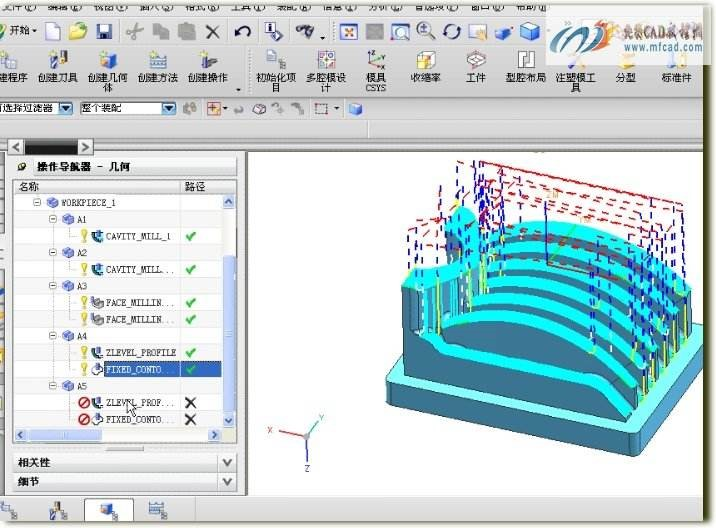自动编程相对与手动编程而言它是利用计算机专用软件来编制数控加工程序，编程人员只需根据零件图样的要求，使用数控语言，由计算机自动地进行数值计算及后置处理，编写出零件加工程序单，加工程序通过直接通信的方式送入数控机床，指挥机床工作，自动编程使得一些计算繁琐、手工编程困难或无法编出的程序能够顺利地完成。
实现自动编程的CAM软件常用的有UG，PRO/E，MASTERCAM，Powermill，CAXA制造工程师等，可以实现多轴联动的自动编程并进行仿真模拟。
基于UG的CAD/CAM的编程基本步骤如下：
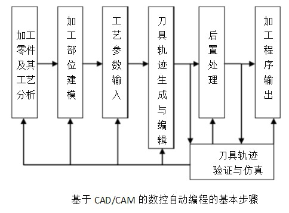主要培训内容如下：
加工零件及其工艺分析是数控编程的基础，和手工编程、APT语言编程一样，基于CAD/CAM的数控自动编程首先也要进行这项工作。在目前计算机辅助工艺过程设计（CAPP）技术尚不完善的情况下，该项工作还需人工完成。随着CAPP技术及机械制造集成（CAMS）技术的发展与完善，这项工作必然会被计算机所代替。加工零件及其工艺分析的主要任务如下。
加工部位建模是利用CAD/CAM集成数控编程软件的图形绘制、编辑修改、曲线曲面及实体造型等功能将零件被加工部位的几何形状准确绘制在计算机屏幕上，同时在计算机内部以一定的数据结构对该图形加以记录。加工部位建模实质上是人将零件加工部位的相关信息提供给计算机的一种手段，它是数控自动编程系统进行自动编程的依据和基础。随着建模技术和机械制造集成技术的发展，将来的数控编程软件可直接从CAD模块获得相关信息，无须对加工部位再进行建模。
在本步骤中，将利用编程系统的相关菜单与对话框等把第一步分析的一些与工艺有关的参数输入到系统中。需要输入的工艺参数有刀具类型、尺寸与材料，切削用量（主轴转速、进给速度、切削深度及加工余量），毛坯信息（尺寸、材料等），其他信息（安全平面、线性逼近误差、刀具轨迹间的残留高度、进退刀方式、走刀方式、冷却方式等）。对于某一种加工方式而言，可能只要求其中的部分工艺参数。随着CAPP技术的发展，这些参数可以直接由CAPP系统给出，这时也就可以省掉工艺参数输入这一步了。
完成上述操作后，编辑系统将根据这些参数进行分析判断，自动完成有关基点、节点的计算，并对这些数据进行编排，形成刀位数据，存入指定的刀位文件中。刀具轨迹生成后，对于具备刀具轨迹显示及交互编辑功能的系统，还可以将刀具轨迹显示出来，如果有不太合适的地方，可以在人工互交方式下对刀具轨迹进行适当的编辑与修改。
对于生成的刀具轨迹数据，还可以利用系统的验证与仿真模块检查其正确性与合理性。所谓刀具轨迹验证（cldata check或NC verification）是指应用计算机显示器把加工过程中的零件模型、刀具轨迹、刀具外形一起显示出来，以模拟零件的加工过程，检查刀具轨迹是否正确，加工过程是否发生干涉与过切，所选择的刀具、走刀路线、进退刀方式是否合理，刀具与约束面是否发生干涉与碰撞。而仿真是指在计算机屏幕上采用真实感图形显示技术把加工过程中的零件模型、机床模型、夹具模型及刀具模型动态显示出来，模拟零件的实际加工过程。仿真过程的真实感较强，基本上具有试切加工的验证效果（对于由于刀具受力变形、刀具强度及韧性不够等问题仍然无法达到试切验证的零件）。
与APT语言自动编程一样，基于CAD/CAM的数控自动编程也需要进行后置处理，以便将刀位数据文件转换为数控系统所能接受的数控加工程序。
对于经后置处理而生成的数控加工程序，可以提供给有读入装置的机床控制系统使用。对于有标准通信接口的机床控制系统，还可以与编程计算机直接联机，由计算机将加工程序直接传输给机床控制系统。
UG车削模块提供了粗车、多次走刀精车、车退刀槽、车螺纹和钻孔循环等加工类型。能准确控制进给量、主轴转速和加工余量等参数。而且能模拟仿真刀具轨迹，可检测参数设置是否正确等功能。
主要培训内容如下：
平面铣（mill_planar）是一种2.5轴的加工方法，它在加工过程中产生在水平方向的XY两轴联动，而Z轴方向只在完成一层加工后进入下一层时才作单独的动作。
通过设置不同的切削方法，平面铣可以完成挖槽或者是轮廓外形的加工。平面铣用于直壁的并且岛屿顶面和槽腔底面为平面零件的加工。对于直壁的、水平底面为平面的零件，常选用平面铣操作做粗加工和精加工，如加工产品的基准面、内腔底面、敞开的外形轮廓等。使用平面铣操作进行数控加工程序的编制，可以取代手工编程。
平面铣操作是在与xy 平面平行的切削层上创建刀位轨迹，其操作有以下特点：
基于以上特点，平面铣常用于直壁、底面为水平面的零件，如型腔的底面、型芯的顶面、水平分型面、基准面和外形轮廓等。按照加工的对象分类有：精铣底面、精铣壁、铣轮廓、挖槽等。按照切削模式分类有：往复、单向、轮廓等。
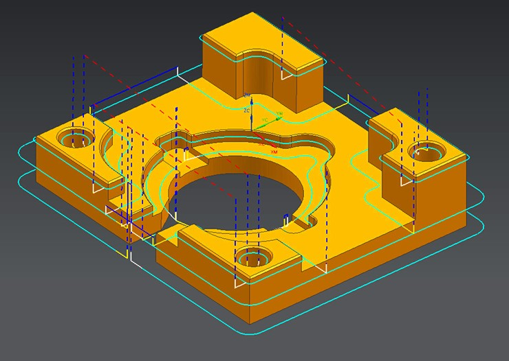主要培训内容如下：
孔加工（Drilling）指刀具先快速移动到指定的加工位置上，再以切削进给速度加工到指定的深度，最后以退刀速度退回的一种加工类型。UG孔加工能编制出数控机床（铣床或加工中心）上各种类型的孔程序。如中心孔、通孔、盲孔、沉孔、深孔等，其加工方式可以是锪孔、钻孔、铰孔、镗孔、攻丝等。
为了简化编程工作，数控系统对典型的加工中的几个固定连续的动作，本需要多个程序段指令完成的加工动作，使用一个指令来执行。这个指令就是孔加工固定循环指令。
孔加工固定循环：
表1 代码含义
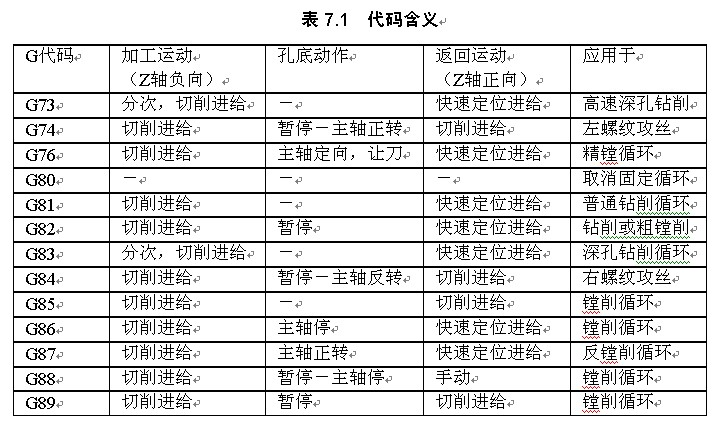图2 孔加工固定循环
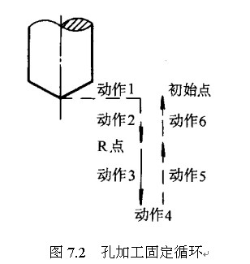主要培训内容如下：
Cavity Milling (型腔铣)通常用于粗加工型腔或型芯，根据型腔或型芯的形状，将要切除的部位在深度方向上分成多个切削层进行切削，每个切削层可指定不同的深度，并可用于加工侧壁与底面不垂直的部位，刀具轴线与切削层垂直。
型腔铣操作与平面铣一样是在与xy 平面平行的切削层上创建刀位轨迹，其操作有以下特点。
主要培训内容如下：
一、固定轴曲面轮廓铣特点
固定轴曲面轮廓铣使用固定刀轴（一般指Z 轴）加工曲面类零件，该操作有以下特点。
二、固定轴曲面轮廓铣的处理过程
固定轴曲面轮廓铣刀位轨迹的产生过程可以分为两个阶段：首先从驱动几何体上生成驱动点，然后将驱动点沿着一个指定的投射矢量投影到零件几何体上，生成刀位轨迹点，同时检查该刀位轨迹点是否过切或超差。如果该刀位轨迹点满足要求，则输出该点，驱动刀具运动，否则放弃该点。
三、固定轴曲面轮廓铣的几个重要概念
主要培训内容如下：
四轴加工的作用之四轴加工中心是高效、高精度数控机床，工件在一次装夹中便可完成多道工序的加工，同时还备有刀具库，并且有自动换刀功能。四轴加工中心能实现三轴或三轴以上的联动控制，以保证刀具进行复杂表面的加工。四轴加工中心除具有直线插补和圆弧插补功能外，还具有各种加工固定循环、刀具半径自动补偿、刀具长度自动补偿、加工过程图形显示、人机对话、故障自动诊断、离线编程等功能。
四轴加工的作用之四轴加工中心是从数控铣床发展而来的。与数控铣床的最大区别在于加工中心具有自动交换加工刀具的能力，通过在刀库上安装不同用途的刀具，可在一次装夹中通过自动换刀装置改变主轴上的加工刀具，实现多种加工功能。
与固定轮廓铣类似，在普通的加工中心上安装数控分度头。数控分度头是数控铣床、加工中心等机床的主要附件之一，亦可作为半自动铣床、镗床及其它类机床的主要附件，是加工复杂产品的最佳辅助利器，其用处如下：
第一：把工件安装成需要的角度，以便进行切削加工(如铣斜面等)。
第二：铣螺旋槽时，将分度头挂轮轴与铣床纵向工作台丝杠用“交换齿轮”联接后，当工作台移动时，分度头上的工件即可获得分度
第三：用各种分度方法(简单分度、复式分度、差动分度)进行各种分度工作。
第四：数控分度头还可以跟独立分度头控制器一起完成工作。用分度头控制器控制数控分度头工作。 一般就是形成一个新的A轴，分为两种，一个是摇篮式，可理解为3.5轴，主要用于不同面上的特征，且相对位置要求高的加工，如下图所示，下面右图为加工完成的状况，这些孔的相对位置要求很严格，因此不能重复装夹，必须一次装夹，加工： 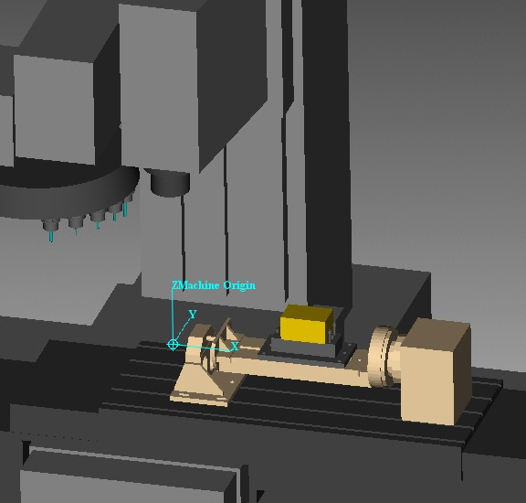 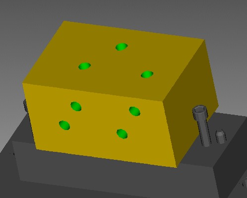分度头可以理解为全四轴，可实现四轴联动，加工螺旋面，分度头如下图
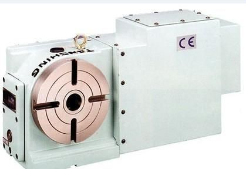 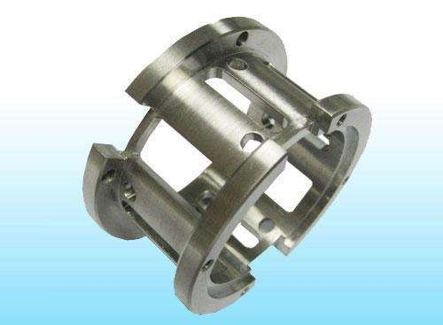可加工工件如下：
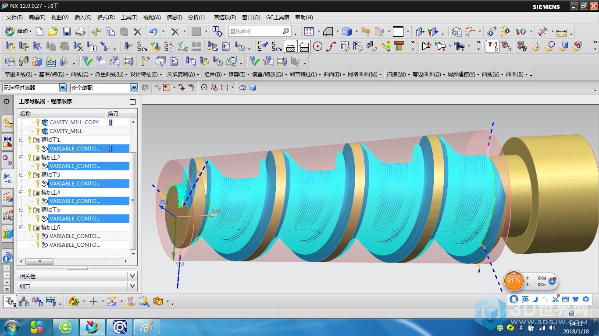主要培训内容如下：
5轴加工也可以称为可变轴曲面轮廓铣刀位轨迹的产生过程与固定轴曲面轮廓铣刀位轨迹的产生过程类似。首先从驱动几何体上生成驱动点，将驱动点沿着一个指定的投射矢量投影到零件几何体上，生成刀位轨迹点，同时检查该刀位轨迹点是否过切或超差。如果该刀位轨迹点满足要求，则输出该点，驱动刀具运动。因此可变轴曲面轮廓铣也有驱动几何体（Drive Geometry）、驱动点（Drive Point）、驱动方式（Drive Method）、零件几何体（Part Geometry）和投射矢量（Project Vector）等概念，且定义方式与固定轴曲面轮廓铣相同。两者的对话框很相似，不同之处主要在于可变轴曲面轮廓铣提供了刀具轴的控制。
可变轴曲面轮廓铣的驱动方法包括边界驱动法、曲面区域驱动法、螺旋线驱动法、曲线/点驱动法、刀具轨迹驱动法和径向切削驱动法。这些驱动方法的定义方式与固定轴曲面轮廓铣一致。需要注意的是，可变轴曲面轮廓铣没有区域铣驱动方法与清根切削驱动方法。
UG系统提供了丰富的刀具轴控制方式，不同的驱动方法，可以使用的刀具轴控制方式也不尽相同。
下图为利用UG进行叶轮五轴的加工。
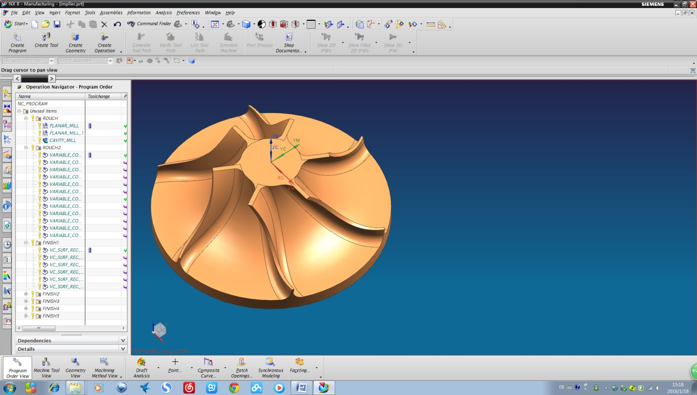 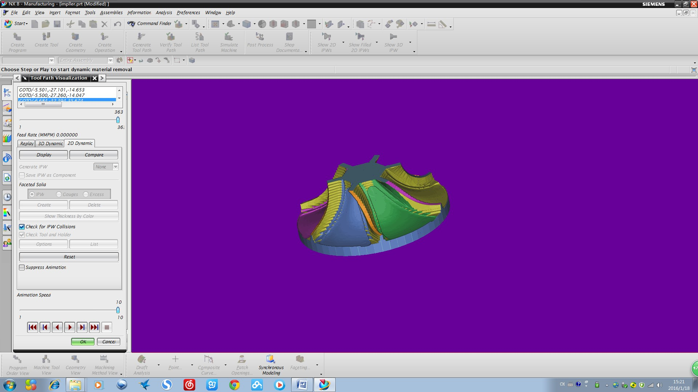 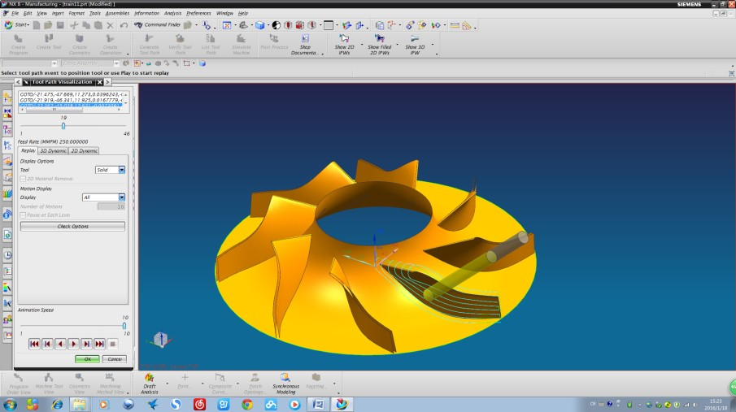 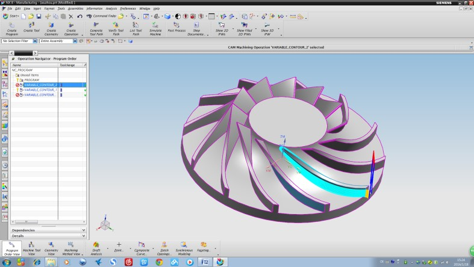主要培训内容如下：
顺序铣是利用零件面控制刀具底部，驱动面控制刀具侧刃，检查面控制刀具停止位置的加工形式，如下图左所示。刀具与零件面、驱动面、检查面接触。刀具在切削过程中，侧刃沿驱动面运动且保证底部与零件面相切，直至刀具接触到检查面。该操作非常适于切削有角度的侧壁。
一个顺序铣操作由4 种类型子操作组成，分别是：点到点运动（Ptp）、进刀运动（Eng）、连续刀轨运动（Cpm）和退刀运动（Ret），如下图右所示。
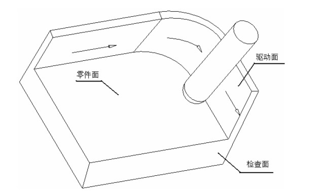 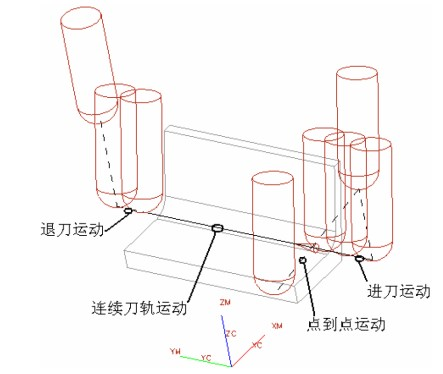下图为利用UG进行多轴顺序铣的典型加工零件，零件的一些侧壁为负角度，需要采用变轴加工。由于需要加工零件的全部表面，因此，在加工过程中需要多次装夹。
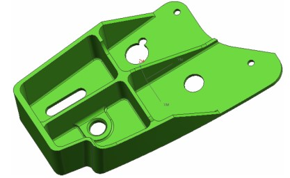 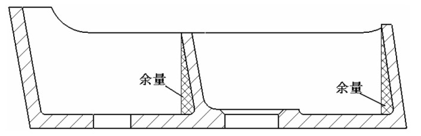主要培训内容如下：